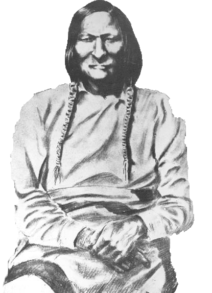

Washita: A Problem in History & Memory
-Jill Lepore, historian
A Battlefield for Whom?
In the early morning of November 27, 1868, George Armstrong Custer and his Seventh Calvary attacked a sleeping village of Cheyenne Indians. Peace chief Black Kettle (pictured to the right) and several women and children were killed indiscriminately according to some reports. The incident is still marred by controversy because not all the details are known and the reports that followed never proved consistent. The historical construction of the "battle of Washita" happened almost immediately after Custer torched what remained of the Cheyenne village. He consulted with Philip Sheridan and passed down "battle" terminology which still largely defines the incident even in modern historical accounts. Currently, the National Park Service preserves and attempts to interpret the Washita Battlefield National Historic Site. The name implies two armies squaring off, but all evidence suggests that is not what happened. History and memory is conflicted at Washita.
Objective
This Washita digital project looks at the historical contruction of a key event in the 19th Century Plains' Indian Wars. It provides historical context and analyzes how different conclusions have been reached but how certain language remains entrenched; this, despite the emergence of more universal accounts and perspectives.